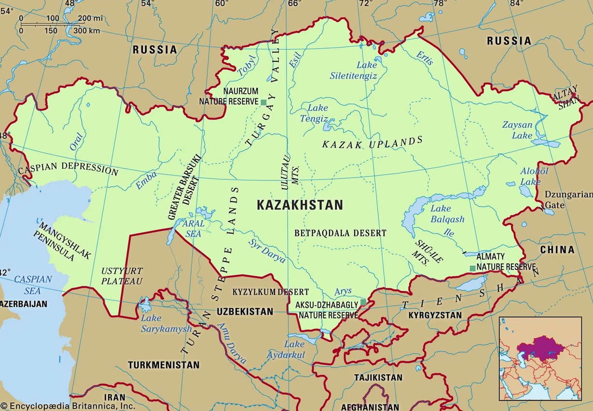
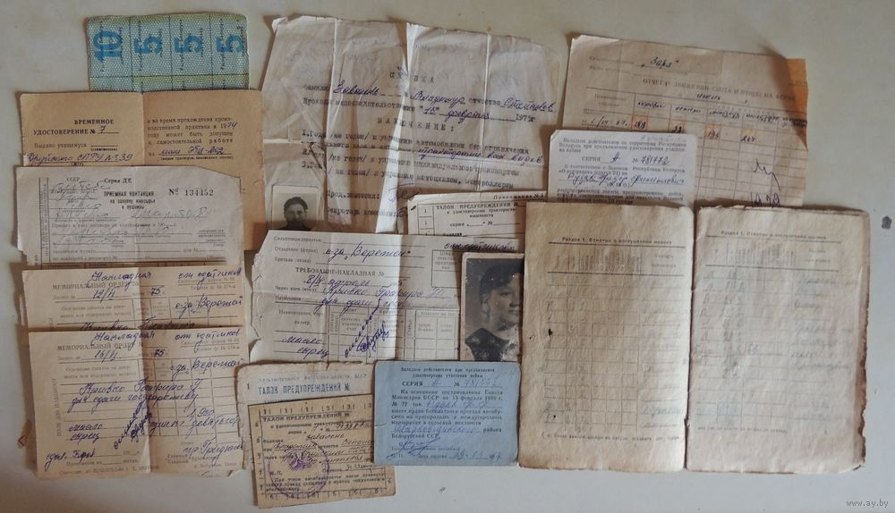
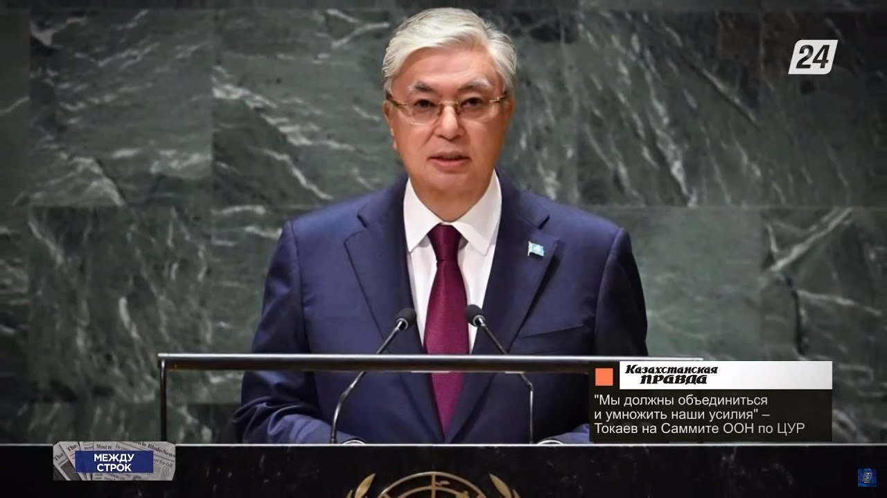

Strategic Comparison
Understanding Kazakhstan's past and present global significance
1940s USSR
- No political voice
- Wartime suffering
- Industrial exploitation
- Centralized command
Modern Kazakhstan
- Strategic diplomacy
- National sovereignty
- UN partnerships
- Energy exports
Shared Traits
- Global relevance
- Resource-rich
- Geopolitical importance
Shared strategic weight, evolving national control
Primary Source Comparison
Analyzing tone, intent, and reliability of key documents
Soviet Decree (1941)
Audience: Soviet administration
Purpose: Mobilize Kazakh industry & labor for war
Tone: Harsh, commanding, authoritarian
Reliability: Internal propaganda, biased by ideology
Tokayev’s UN Speech (2023)
Audience: Global leaders
Purpose: Promote peace, trade & sovereignty
Tone: Diplomatic, inclusive
Reliability: Public & documented, can be cross-checked
Cross-Check & Interpretation
- Compare Soviet directives with official archives & scholars' analysis
- Tokayev’s speech verified by international media & UN transcript
From command to conversation: Kazakhstan’s evolution in political communication